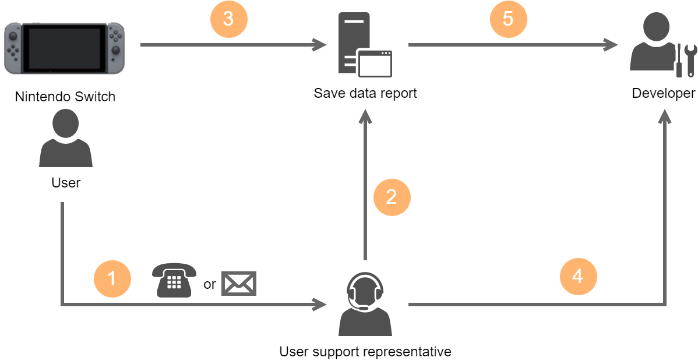
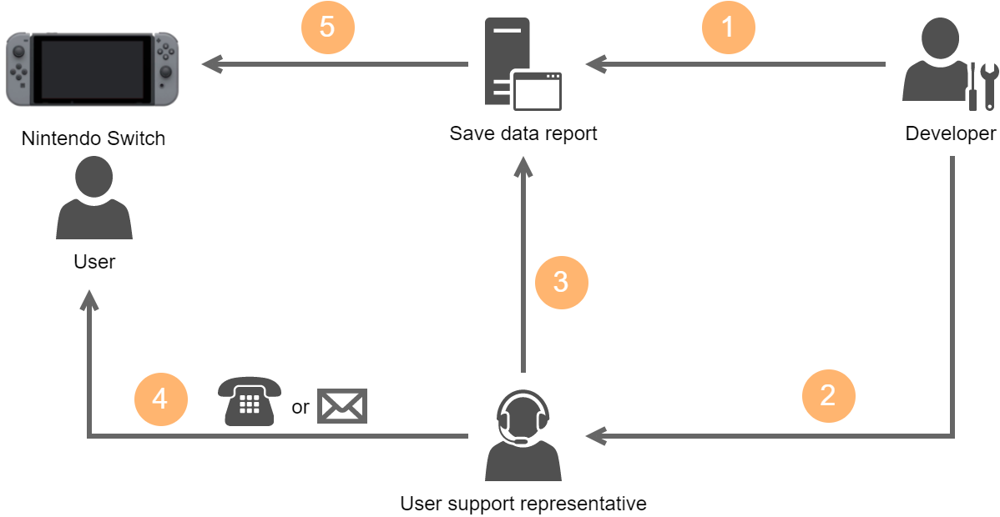

5 Save Data Report Usage Example
Usage Example
Save Data Report is expected to be used to collect or restore save data as part of responding to inquiries from users.
For this reason, this document uses a basic example, involving collaboration between the following two parties at the development company, to demonstrate operations.
- User support representative who receives inquiries from the user
- Developer who investigates and repairs the collected data
When Data Is Collected

|
Number |
Person |
Operation |
Details |
|---|---|---|---|
| 1 | User | Make an inquiry about the application |
|
| 2 | User support representative | Allow upload |
|
| 3 | User | Upload save data |
|
| 4 | User support representative | Contact the developer |
|
| 5 | Developer | Get save data |
|
Restoring Repaired Save Data

|
Number |
Person |
Operation |
Details |
|---|---|---|---|
| 1 | Developer | Submit repaired save data |
|
| 2 | Developer | Contact the user support representative |
|
| 3 | User support representative | Allow download |
|
| 4 | User support representative | Notify the user |
|
| 5 | User | Download save data |
|
Other Use Cases
For internal use only, you can use Save Data Report for purposes like the following example.
- Download save data that advances progression in a game to a Switch console owned by the publisher and use it for an event or promotion.
Note
Do not collect a user's save data for any purposes other than investigations or repairs.
CONFIDENTIAL